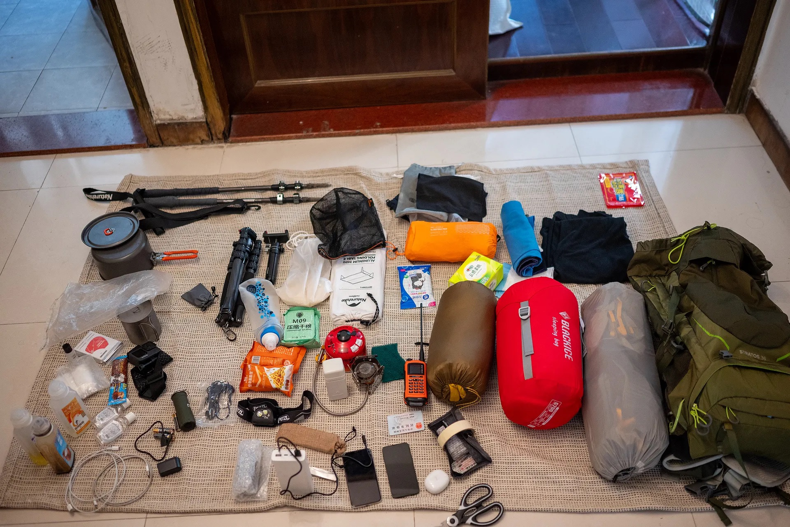

⛰️户外资料备查清单
品牌查备清单
*品牌在国内是否有自有工厂能够印象他的价格是否亲民，也能一定程度反映他们能不能提供方便和优质的产品售后和质量。因此我尽可能地标注了我熟知的品牌在国内是否有工厂。但没有标注的并不代表其在国内没有工厂，更可能是官方未公布此类消息，或是我还不知道。
*产品使用体验和品牌评价具有时效性，且受限于我的主观使用体验。我非常有可能描述得不完整。我相信每个品牌都在不断进步。
装备准备
在新疆徒步需要准备专业的装备，特别是应对多变的气候条件。新疆昼夜温差大，即使在夏季，夜间温度也可能降至0℃左右。
背负&睡眠领域品牌（@2024年9月21日 ：
zpacks - 国外品牌，产品包括洗漱包、打包袋、帐篷、背包，主打极致轻量化
MORAKNI/莫拉 - 国外品牌，主要生产瑞士丛林生存刀（猎刀），国内购买需付较高关税
手艺宅 - 国内厂家，产品主要是帐篷
山趣（Shine Trip） - 国内品牌，产品主要是帐篷
EE（Enlightened Equipment） - 美国品牌，主要提供定制化睡袋纯手工制作服务，可自定义设计，有自己的工厂，受众多户外YouTuber推荐，价格相对合理但需排队数月，中国大陆无代理
轻途 - 国内品牌，为挪客代工，产品质量与挪客相当，价格更便宜
并州牧 - 国内品牌，防潮垫在户外圈知名度高，但品牌资料较少
翼马 - 国内品牌，睡袋价格亲民，工厂情况不明
高山客 - 国内品牌，产品涵盖帐篷、服饰到通讯设备，国内有工厂
ULA - 美国品牌，产品主要是轻量化背包，美国本地品牌，国内无购买渠道
bonfus - 美国品牌，从工作室发展为轻量化第一梯队，产品包括轻量化背包、登山杖和帐篷，58L背包仅700g，非自立双人帐篷600g（价格700美元）
HMG（Hyperlite Mountain Gear） - 美国品牌，产品主要是轻量化背包，价格比bonfus稍便宜但仍较高，粗苯工艺和设计各有特点
TMR W.R.Cooker - 日本品牌，产品包括帐篷、背包、户外炊具，价格昂贵，国内无渠道
自由之魂 - 国内品牌，产品主要是帐篷，价格较同类竞品偏高，国内无工厂
三峰出 - 国内知名品牌，产品主要是帐篷、背包，借鉴国外T1梯队设计，材料亲民，价格实惠
knot（远行） - 国内品牌，无自有工厂，原主要生产小件产品，近期转向轻量化路线
迪卡侬 - 国际品牌，其2-4人露营不粘锅套锅表现优秀
UI（FORCLAZ） - 迪卡侬子品牌，logo字样为UI
格里高利 - 国外知名品牌，经典产品B75曾是负重背包代表，自重2.2kg，近年向轻量化方向发展
OSPREY - 国外知名背包大厂，工厂在越南，"空速背负"系统适合夏季易出汗情况使用
BA - 国外品牌，主打轻量化，产品主要是帐篷，自立帐轻巧但价格昂贵
Deuter多特 - 主要产品为背包，品牌了解度较低
MYSTERY RANCH - 神秘农场，知名背包品牌，风格偏向BC和军事风，设计较为特殊
aricxi - 国内品牌，产品主要是庇护系统（天幕、帐篷、睡垫），天幕和地布表现一般
kovea - 韩国品牌，主营精致露营产品（炉头、酒精炉、杯子等），价格昂贵，有为其他品牌代工的工厂
ASTAGEAR（静星） - 国内轻量化品牌，产品主要是帐篷、天幕，少数使用粗苯材料的国内品牌，山居1无杆单人帐粗苯材质仅560g，价格3800元
炊具系统：
德力西 - 中国500强企业，主营金属制品，例如刀具、螺丝刀。
GSI OUTDOOR - 产品主要是炊具，设计和口碑不错，但实际是伪装成国外品牌的国内工厂，在中国生产并转内销。
小乐工房 - 产品主要是酒精炉、柴火炉、炉头、锅碗瓢盆，是在闲鱼上售卖自制产品的手工店铺，口碑良好。
iWalker爱玩客 - 产品主要是酒精炉、柴火炉，但新产品营销噱头多，实用性变差。据说是找代工厂生产。
goshawk - 产品主要是炉子、柴火炉、酒精炉，品牌和工厂都在澳洲，偏向BC风。
鸿丰、必唯 - 国内两个专门做纯钛和钛合金制品的厂家。
雪峰Snow Peak - 日本知名品牌，定位城市露营，日本和中国都有工厂。
步林 - 国内品牌，产品多有设计，但偏向城市露营，主打价格优势。
OPINEL - 号称法国品牌，无中国渠道和工厂，产品全是刀具，旗下有铪刃产品。
山之厨 - 国内品牌，产品主要是冻干食品、压缩食品。
Ever new - 国外品牌，炊具系统基本上都有涉及，产品设计比较创新。
MSR - 国外知名品牌，产品主要是炊具、小件装备和极端环境下的产品，是户外领域非常出名和可靠的品牌。
Trangia - 国外知名品牌，产品主要是酒精炉，还有折叠柴火炉、卡片柴火炉、焚火台等。酒精炉的设计和燃烧表现个人评价一般。
seatosummit - 国外知名品牌，价格相对较高。
火枫 - 国内品牌，盛宴系列锅具口碑不错，耐用。
爱路客 - 国内品牌，营销噱头较多，设计不实用。
岩谷 - 国内品牌，产品主要是炉子，基础款价格低廉（70CNY）。
soto - 户外装备知名品牌、炉具较出名。
old papa - 刀具品牌，可能不算纯户外领域，但小刀实惠便宜。
bushbox - 主营折叠柴火炉/卡片柴火炉、焚火台。
firebox - 主营折叠柴火炉/卡片柴火炉、焚火台。
FlameCube/纯焰 - 国产品牌，主营折叠柴火炉/卡片柴火炉，有一些有趣的设计。
山趣 - 只买过折叠手锯。
戈博、鸿丰、福冈、顺全、莱泽曼、三刃木、鹰朗、洛森rorox - 这些品牌主营EDC、多功能刀、斧头等道具。
邓家刀 - 主要售卖刀具，特点是价格有竞争力。
脉鲜 -韩国品牌，最知名的G2、G5系列扁液化气罐专为高海拔环境设计。G5实际容量（230-245g）多于G2（110g）。G5更适合单人5天以上旅途（搭配soto310最大火力约4小时），G2适合3天以下旅途（约2小时）。
保暖服饰：
黑冰BLACK ICE - 近几年知名度非常高的羽绒制品牌，名气有赶超mont-bell的趋势，睡袋口碑非常好，但价格逐年上涨，自有工厂。
戴适 - 防水袜，官方宣称有透气防水效果，但实测数据不明显，建议购买前搜索更多测评。
HOKA - 徒步鞋、越野跑鞋和跑步鞋。消息称没有自有工厂，找代工生产。其哈卡2系列使用体验不错，但价格偏高。
lowa - 徒步鞋，鞋底比HOKA更硬。
STS（seatosummit） - 专门做小件装备，例如只有10几g的充气枕头和毛巾等，但价格较贵。
巴塔格尼亚Patagonia - 有人说在国外是跟“鸟”同级别的品牌，热爱环保，但价格非常昂贵。
Columbia - 主营服饰，工厂分布全球，中国应是找代工生产。自家宣称的防水面料技术Omni-Dry，本质上就是GTX。枫叶色的软壳很好看，但价格较贵。
KLATTERMUSEN/攀山鼠 - 户外发烧品牌，老字号，价格昂贵。
山家mont-bell - 羽毛制品老字号，目前最出名的户外羽绒制品品牌。GTX800FP是静态保暖的可靠方案，品控和设计细节非常到位，价格略贵。
marmot/土拨鼠 - 价格昂贵，信息不详。
岩云 - marmot在国内的代工厂，品质和土拨鼠几乎一致，但价格便宜很多。
山浩Mountain HARD WEAR - 老字号，价格昂贵。
凯乐石 - 国产热门品牌，工厂在湛江，产品质量不错，价格一直在上涨。
HELLYHANSE 哈里汉森 - 国外品牌，主打高端，但朋友实测结果反馈其质量不佳。
Arc’teryx 始祖鸟 - 近几年被安踏集团收购，定位隶属安踏旗下高端户外品牌，营销带来的溢价很高，质量过关，具有很强的社交价值。
红辣椒 Hotchilliys - 主营运动服饰。
其他户外品牌与装备
觅乐 - 户外品牌，产品涵盖**阿式攀登**、**单日徒步**、**轻量化**装备。
柯曼罐 - 不是品牌，是一种小型气罐，非常适合烛灯使用。
NH挪客Naturehike - 没有自己的工厂，产品几乎是**平行抄袭**，定位类似于国内小米有品，优势是**性价比高**；抄袭的帐篷质量不错。
奥特莱斯 - 只是一个**品牌资源很丰富的分销商**，经常打折。
索耶 - **驱蚊喷雾**，未有实测数据。
南极人、俞兆林、花花公子、长虹、牧高笛 - 不推荐用于**户外徒步**，适用于**城市露营**。
Gerber - **垂钓装备**，专营小件装备。
kifaru 犀牛 - 产品更多面向**骑行和摩旅**领域，价格昂贵，性价比不高。
塞拉诺火腿 - 价格昂贵，200～300g售价约100多CNY。
数码与专业装备
颂拓 - **户外腕表**品牌，2022年被亚玛芬出售给可穿戴设备品牌**猎声**（东莞市猎声电子科技有限公司），该公司是**小米生态链**旗下的一员。
JUEER爵尔 - **天文摄影定制电源**，很适合户外使用，解决了传统户外电源体积过大的问题。
petzl攀索 - **法国户外攀岩装备品牌**，垂直领域的领头羊，产品从**头灯到服饰、绳子**等一应俱全，价格较贵，国内无工厂。
Garmin佳明 - **科技企业**，做**GPS**起家，创始人几乎发明了GPS这个概念。产品主要有**卫星通讯**、手持GPS设备、户外腕表等。但遗憾的是很多核心功能（如SOS应急中心和实时共享系统）国内不支持。
fenix - **户外灯具品牌**，有自己的工厂，**65T头灯**是出名系列，虽然比轻量化重了几克且外表死板，但**发热控制得很好，质量稳定可靠**。
山力士 - 专营**户外露营灯具**品牌，以此发家。
天火 - 主营**强光手电**，国产良心厂家。
NITECORE/奈特科尔 - 主营**轻量化头灯、轻量化充电宝**。
未了解或待研究品牌
kilima - 专门做**手杖**。
鲁滨逊 - 专门做**手杖**。
bostik super - 冷门小众品牌。
The North Face 北面 - 知名品牌，各地都有工厂。
Granite Gear 花岗岩 - 知名品牌，只知道名字。
Dana Design 丹拿设计 - 国外品牌，只知道名字。
HAGLOFS 火柴棍 - 只知道名字。
Salomon和lululemon - **安踏集团旗下泛户外品牌**，主营服饰。
蕉下 - 国产品牌，**泛户外**，无工厂，主打城市运动，营销手段高超。
Mountain - 大宗消费品牌，没有设计。
牛舍户外俱乐部 - 淘宝上提供**客制化睡袋服务**的店家。
君羽 - （编辑目前正在了解…）
BLACK YAK黑耗牛 - （编辑目前正在了解…）
stingray camping - （编辑目前正在了解…）
驴之户外 极限老李 平原户外 南北户外 - （编辑目前正在了解…）
/....正在迁移补充
/